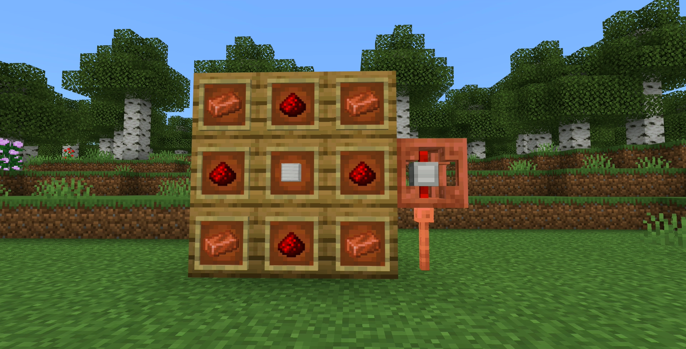
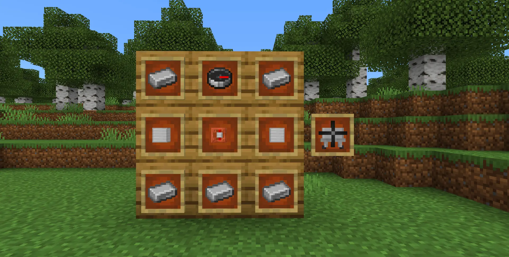
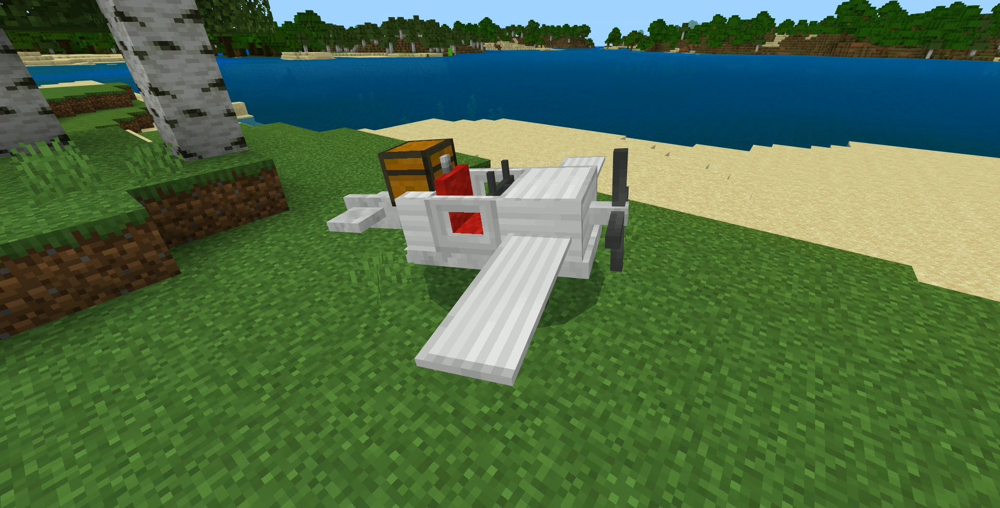
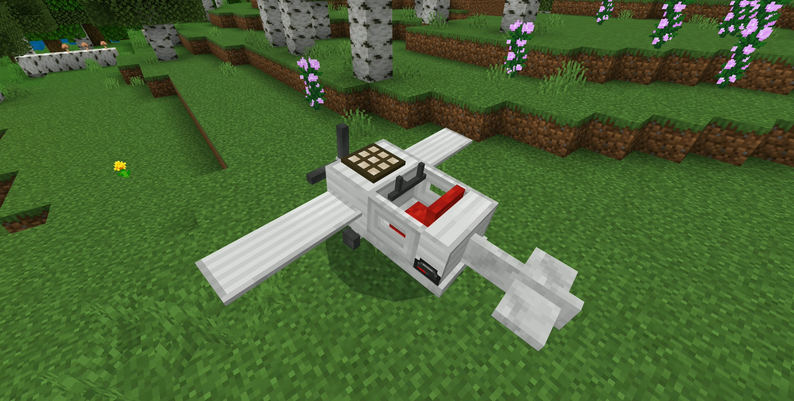
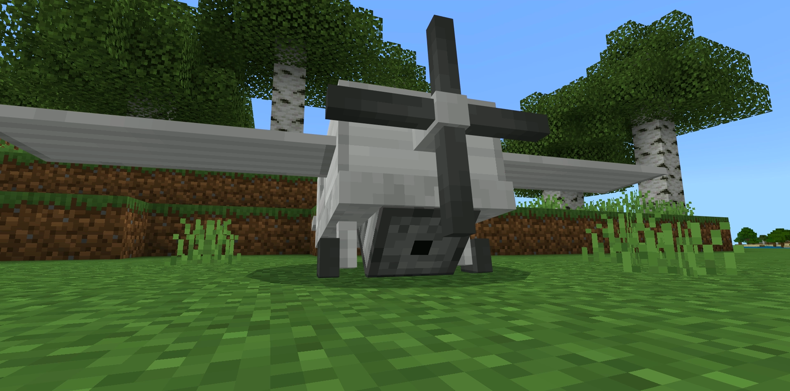
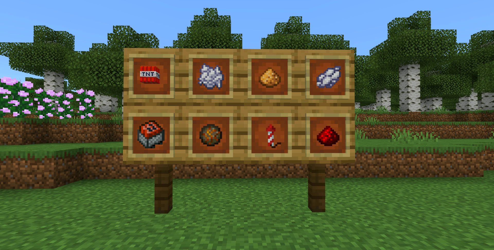
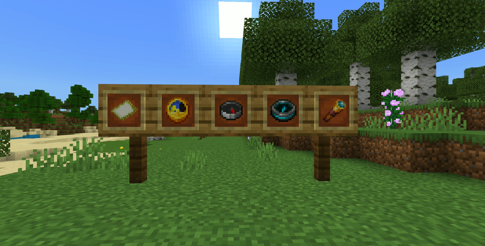

Walking? Running? Traveling by minecart? Feeling a bit sluggish for exploring the expansive Minecraft world? That's precisely why this Add-On was created! Behold! A fresh mode of transportation has arrived: the Plane!
Take a look at the plane! It's so cool! And those blocks aren't just for decoration! You will learn more about them later.

Let's start on how to craft the plane. To get started, you'll require the Redstone Engine, which serves as the plane's power source. All you need is 4 redstone dusts, 4 copper ingots, and 1 iron block, and you're good to go!

Finally, the plane itself. You'll need the Redstone engine, 2 iron blocks on both side, 1 compass on top and 5 iron ingots. Once you have all the materials, you can craft the plane!
Oh right! I forgot to mention that you'll need to fuel the plane with redstone! You can do so by right-clicking on the plane with redstone (or redstone block) in your hand. There's a fuel indicator on the plane, so you can check how much fuel you have left.
Let's equip the plane with some attachments, shall we. There're 3 of them: Chest, Daylight Sensor and Dispenser!

You can attach them by right-click on the plane with the attachment in your hand. For the chest, it will be placed on the back of the plane, adding more storage space for you to transport your items.

The daylight sensor will be placed on the top of the plane engine, allowing you to fly without fuel in daytime! However, it will not work at night, so you'll need to load up some fuel if you want to fly at night.

The dispenser stands out as the most intriguing attachment. It will be situated beneath the plane, and with the right items, it can do some pretty cool tricks.

And here's all the items that you can use with the dispenser. The TNT and TNT-mincart are very much self-explanatory, it drops down TNT from the sky. Let's explore the rest of them one by one and see what they do.
The first one is Dye! Any dye will do, while the plane is flying, it will create a trail of colored smoke behind it. The color of the particles will be the same as the dye you used.
The dye won't be visible at night, so you'll need to use the glowstone dust instead. It will create a trail of glowing particles behind the plane.
If you're interested in farming, you can use the bone meal to fertilize the crops beneath the plane. It will only work with crops (wheat, carrot, potato, etc) and not with sapling or mushroom.
The firework rockets and redstone will both instant-boost your plane speed. While the redstone only boost in the Y-axis, the firework will boost in your view direction.
Note that, the plane can crash! If you fly the plane to go straight down (or execute a bad landing), the plane will crash and explode.

Note that, the plane can crash! If you fly the plane to go straight down (or execute a bad landing), the plane will crash and explode.
You can also toggle the camera view using these items! The camera view will be toggled between a special custom-made 3rd person view and 1st person view.